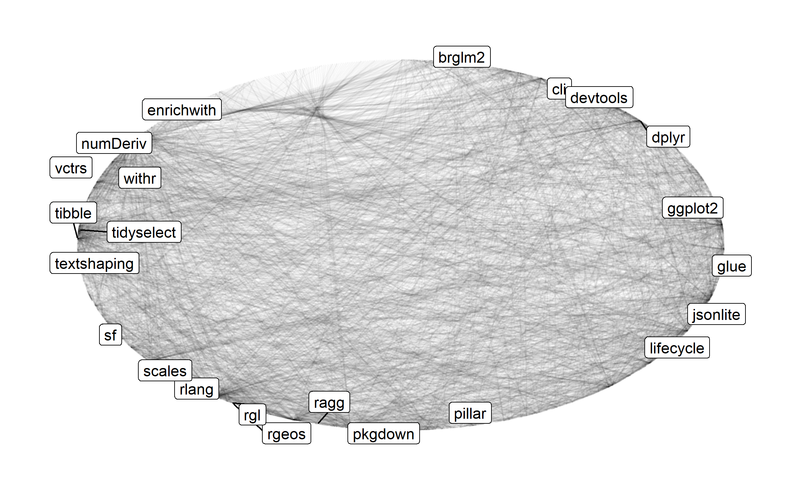

| 09:00 - 09:45 | Introduction and outline |
| 09:45 - 10:45 | R packages, what are they? + practical |
| 10:45 - 12:00 | Workflow for creating R packages + practical |
| 12:00 - 13:00 | Lunch break, chat & network |
| 13:00 - 14:00 | Package quality + exercise |
| 14:00 - 15:30 | Collaboration with git & GitHub + group practical |
| 15:30 - 16:00 | Coffee break, chat & network |
| 16:00 - 17:00 | Publication + practical |
| 17:00 - 17:45 | Buffer, recap + wrap-up |
| 18:30 - 20:30 | Optional dinner |
Introduction
Introduction of speakers, get-to-know the audience, organisation, outline of program.
Photo CC0 by Mabel Amber on pexels.com.
Photo CC0 by Mabel Amber on pexels.com.
Disclaimer
Any opinions expressed in this presentation and on the following slides are solely those of the presenter and not necessarily those of their respective employer or company.
Daniel
- Statistician (Ph.D. in 2013 on Bayesian Model Selection)
- Biostatistician at Roche for 5 years, Data Scientist at Google for 2 years, Statistical Software Engineer at Roche for the last 3 years
- Multiple R packages on CRAN and Bioconductor, co-wrote book on Likelihood and Bayesian Inference, chair of the ASA BIOP working group on Software Engineering (SWE WG)
- feel free to connect at LinkedIn or Github
Friedrich
- Since 2008 self-employed consultant for computer science and data science as well as biostatistics
- Co-founder and CEO of RPACT, a company developing the formally validated R package rpact with 21 releases on CRAN since 2018
- Trained software architect; R programmer since 2004; R Shiny developer since 2019
- Feel free to connect at LinkedIn or Github
Kevin
- Trained in math, ‘statistical engineer’ by heart
- Research associate in Heidelberg & Cambridge
- optimal clinical trial design
- statistical genetics & high dimensional data
- Methodology statistician with BI since ’21
- R-tist, extensive experience with R packages, version control, and high-performance computing
- feel free to connect at LinkedIn or Github
What you will learn today
- Understand the basic structure of an R
- Create your own R package
- Learn about & apply professional development workflow
- Learn & apply fundamentals of quality control for R
- Get crash-course in version control to stay organized
- Try out modern collaboration techniques on GitHub.com
- Learn how to make R available to others
Program outline
House-keeping
- Course website at kkmann.github.io/workshop-r-swe
- all slides
- sources available at github.com/kkmann/workshop-r-swe
- all materials CC-BY 4.0
- We have a gitter chat channel for this course that you can connect to
- use to ask your peers questions
- will try to monitor during course
- slido.com: #3112331
What you will need
- Github.com (free) account
- Recommended: posit.cloud
- Free tier sufficient
- Comes with everything installed
- Alternative: local R development environment with
- git
- Rtools/R/Rstudio IDE
- Curiosity 🦝
- Positive attitude 😄
What do we mean by GSWEP4R*?
* Good Software Engineering Practice for R
- Applying concept of GxP to SWE with R
- Improve quality of R code/packages, particularly in regulated enviroments but not limited to!
- Not a fixed term, we share our perspectives
- Collection of best practices
- Do not reinvent the wheel: learn from IT/open source space
Why care about GSWEP4R?
- Move to / integration of R in pharma is clear trend
- R is a powerful yet complex ecosystem
- Core component: R packages
- Mature analysts: users & contributors
- Deep understanding crucial, even to just assess quality
- Analyses increasingly require complex scripts/programs
\(\leadsto\) line between programming and data analysis blurs - Value: de-risking use of R and efficiency gains
Start small - from script to package
- Encapsulate behavior (functions)
- Avoid global state/variables
- Adopt consistent coding style
- Document well
- Add test cases
- Version your code
- Share as ‘bundle’
\(\leadsto\) R package
The R package ecosystem - huge success
if (!file.exists("resources/pkg_graph.png")) { # primitive caching
library(tidyverse)
local({
r <- getOption("repos")
r["CRAN"] <- "https://cloud.r-project.org"
options(repos = r)
})
# get pkg cumulative downloads from last month
db <- tools::CRAN_package_db()
tbl_dl_ <- db %>%
group_by(chunk = row_number() %/% 100) %>% # chunk to comply with API limit
nest() %>%
mutate(
res = purrr::map2(
data, chunk,
function(data, id) {
cranlogs::cran_downloads(data$Package, when = "last-month") %>%
group_by(package) %>%
summarize(count = sum(count))
}
)
) %>%
ungroup() %>%
select(res) %>%
unnest(res) %>%
distinct()
tbl_dl <- filter(tbl_dl_, count >= 10000L, !is.na(count))
tbl_deps <- tools::package_dependencies(
tbl_dl$package,
which = c("Imports", "Depends", "LinkingTo")
) %>%
enframe(name = "from", value = "to") %>%
unnest(to)
grph_deps <- tidygraph::as_tbl_graph(tbl_deps) %>%
left_join(
tbl_dl_,
by = c(name = "package")
) %>%
filter(!is.na(count)) # remove base packages
plt <- ggraph::ggraph(grph_deps, layout = "linear", circular = TRUE) +
ggraph::geom_edge_link(alpha = .033) +
ggraph::geom_node_label(
aes(label = if_else(count > quantile(count, 0.975, na.rm = TRUE), name, NA_character_)),
repel = TRUE
) +
ggraph::theme_graph()
ggsave("resources/pkg_graph.png", plot = plt, width = 8, height = 8/1.61, dpi = 300)
}
knitr::include_graphics("resources/pkg_graph.png")
GxP + R =
- Core infrastructure packages only through industry
- Quality, burden sharing: open-source pharmaverse and others
- Open methodological packages can de-risk innovative methods
- R packages make (statistical/methodological) code
- testable (with documented evidence thereof, CRF 11)
- reusable
- shareable
- easier to document